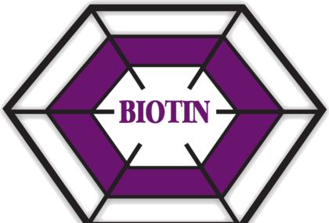
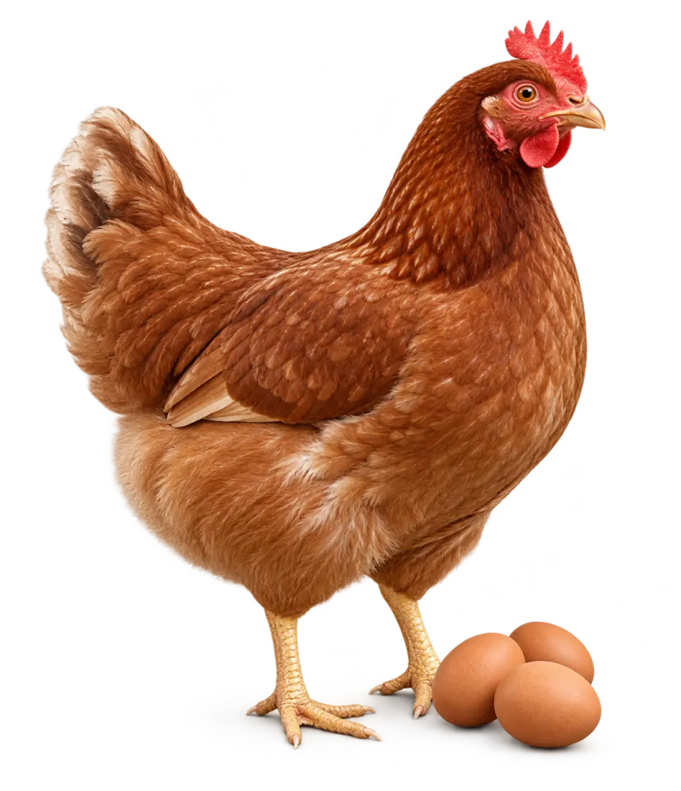
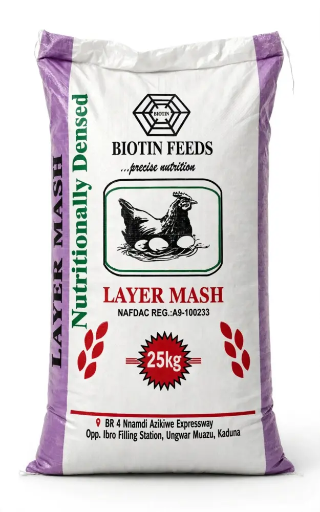
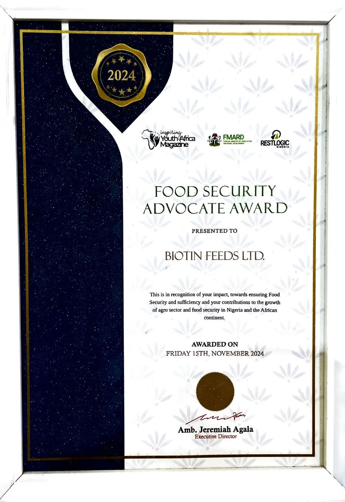
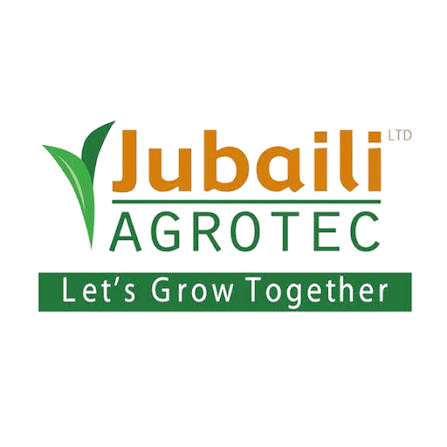
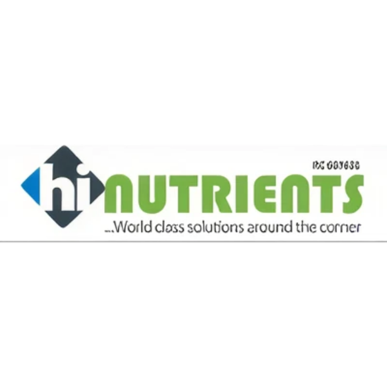

Precise quality
Carefully formulated nutrition for different animal classes and production stages.

BIOTIN FEEDS Find your feedTrusted livestock nutrition since 2012
Affordable, carefully formulated feed delivered to farmers across Nigeria.
Choose an animal class to see the feeds formulated for its growth stage. Every product is available by direct enquiry.

Recommended range

Complete mash
Supports sustained egg production and desirable egg quality.
Biotin Feeds was founded by Abdullahi Ishola in 2012 to bridge the nutrition gap in livestock production.
We make quality feed more accessible and formulate precisely for the nutritional needs of each animal class.
Speak with our team ↗years focused on affordable, quality livestock nutrition
Choose complete mash or concentrate by animal class and growth stage. Open any product for its key benefits and a direct pricing enquiry.
Clear formulations, established industry standing and logistics across the three northern zones.
Carefully formulated nutrition for different animal classes and production stages.
Established in 2012, recognised by farmers and active within professional industry bodies.
Delivery supporting farmers, distributors and depots throughout Nigeria.
We deliver nationwide across all six geopolitical zones. Northern Nigeria remains our strongest current reach as our network continues to grow.

15 November 2024
Presented to Biotin Feeds Ltd. in recognition of its contribution to food security and the growth of the agro sector in Nigeria and across Africa.


Experienced people guiding every part of Biotin Feeds—from formulation and quality control to customer service and delivery.
Step inside our Kaduna operation—from careful preparation and production to the people, learning and logistics behind every delivery.
Short, direct accounts from customers using Biotin Feeds on their farms.
“The Layer Mash feed has been great.”
“Biotin Feeds has helped my farm grow. I’m truly grateful.”
“One of the best products to buy.”
Speak directly with our team for product recommendations, current pricing and availability.
Mon–Sat · 8:00 AM–5:00 PM
Sunday · Closed
BR 4, Nnamdi Azikiwe Expressway, opposite IBRO Filling Station, Ungwan Muazu, Kaduna.
Customers are welcome during opening hours.